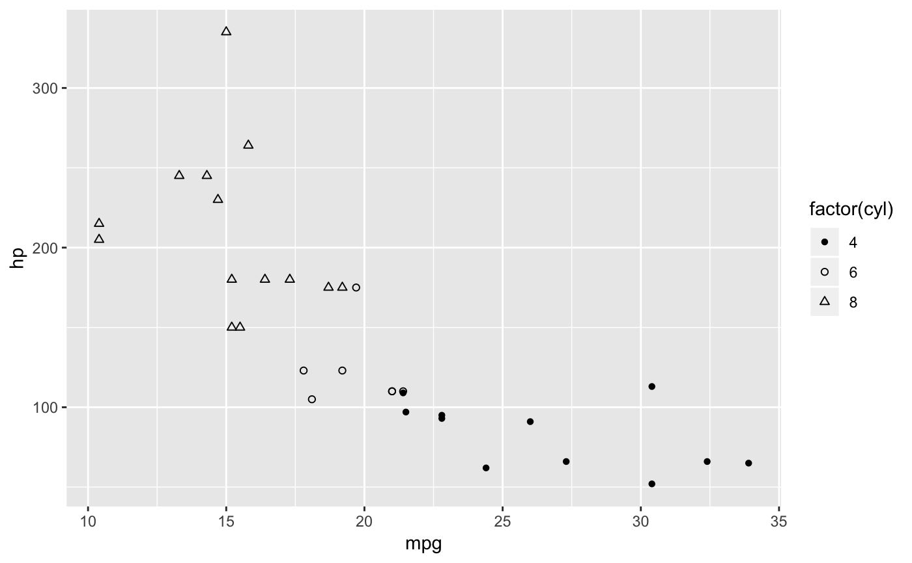
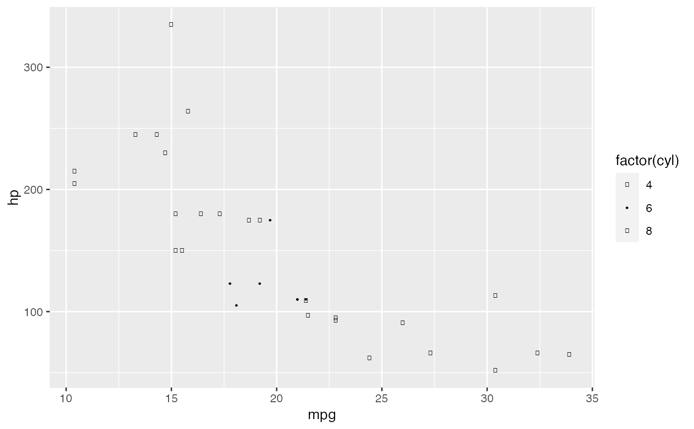
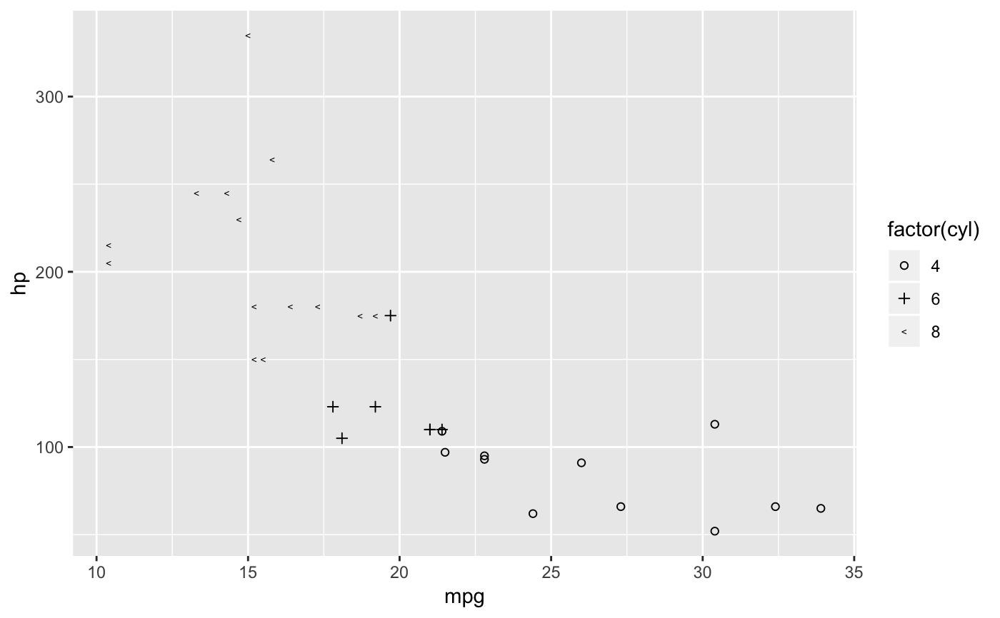

Shape palette with circles varying by amount of fill. This uses the set of 3 circle fill values in Lewandowsky and Spence (1989): solid, hollow, half-filled, with two additional fill amounts: three-quarters, and one-quarter.
circlefill_shape_pal()
Details
This palette supports up to five values.
References
Lewandowsky, Stephan and Ian Spence (1989) "Discriminating Strata in Scatterplots", Journal of the American Statistical Association, http://www.jstor.org/stable/2289649
See also
Other shapes:
cleveland_shape_pal(),
scale_shape_circlefill(),
scale_shape_cleveland(),
scale_shape_tremmel(),
tremmel_shape_pal()
Examples
library("ggplot2") p <- ggplot(mtcars, aes(x = mpg, y = hp, shape = factor(cyl))) + geom_point() p + scale_shape_tremmel()